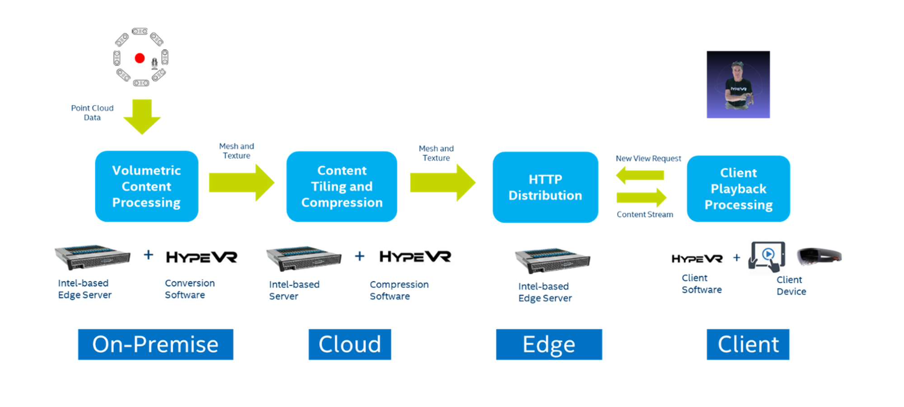
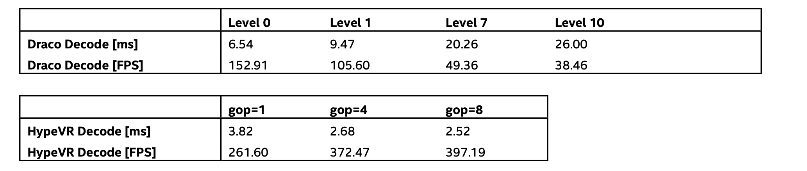
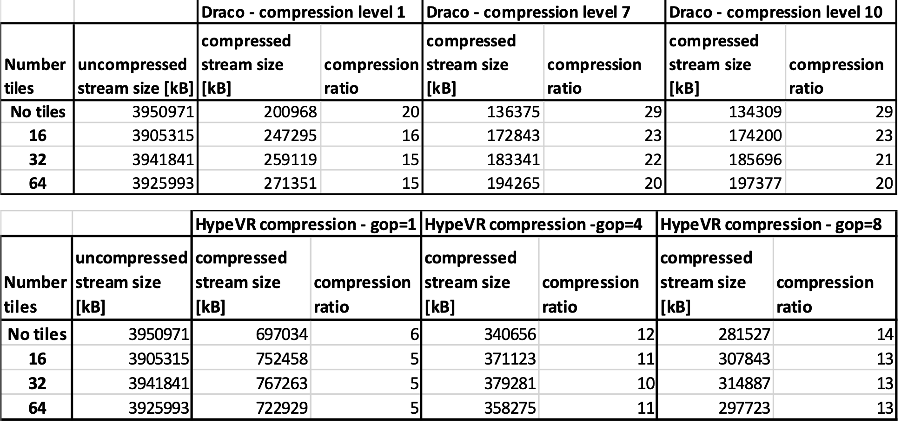

在CES2019和2020 ComCast和Intel发布了面向未来的网络方案。进来多视角视频和体三维视频的发展也对传输和点播直播技术提出了很多新的要求。
对于体三维内容业界一直在提升2种捕获方式的清晰度和捕获质量—深度传感器/多视角RGB，目前在体育比赛和综艺节目中的巅峰时刻就是这种内容最好的体验方式之一，但是对于观众来说总想能随时去最喜欢的地方和角度去观赏节目，100%体三维VOD点播直播系统，并因此伴生的虚拟观赛平台产品将在未来是AVR行业和内容行业新的增长点。
###体三维VOD流系统的挑战 体三维的内容最终2种形态其中最重要一种的基于点的媒体实现方式，因为其效果具有极好的清晰度和还原度，也是MPEG-I工作组的目前的重点方向，目前体三维的内容在转换成点云后依然需要1Gbps每秒的传输速度来实现实时观看，虽然5G和Wifi6基本都能达到这样速率但是一旦网络略差（而且大部分时候达不到）就会卡顿影响观看体验。长期来看初步的体三维内容直播的码率目标为100-200Mbps，这个速率容易达到，并且也能为体三维内容提供足够的带宽（在采用适当压缩方式前提下）端到端延迟100ms左右也能达到直播和体三维视频电话的要求 下面是一端封装好的Volometric Video演示，可以自由旋转视角和距离（请用Chrome） https://wikieden.github.io/Volumetric_Video_WebPlayer/main.html

为了达到可接受的实用成都，需要对体三维内容进行压缩，Intel相关研究结果表明在合适的压缩比率下，带宽至少还是需要100Mbps，压缩算法和解压算法需要适应低延迟，高压缩比这样的要求，这里先看两种已经进入实用阶段的算法，另外还有Mpeg-I提出的几个草案在过程中，近期也将会落地，未来一段时间我的工作重点也是体三维内容平台的搭建和技术相关，主要覆盖从捕获-处理-传输（压缩）-播放全流程。
第一种算法是Draco来自google，不少游戏工作者会比较熟悉，这个google的开源项目主要关注在空间信息压缩上，地址是https://github.com/google/draco，目前已经提供非常全面的平台支持支持mesh/pc多种类型立体媒体格式。第二种来自HypeVR，使用时间一致性压缩方法，之后将会详细介绍两种算法在编解码上的包括延迟在内特性，还会把HypeVR时间一致性压缩算法关于纹理压缩部分拿出来和常见的JPEG压缩做对比
由HypeVR [6]开发的Mesha编解码器[6]是一种高质量，专有的，有损的体积视频编解码器，用于存储，流传输和播放具有4K纹理分辨率和60K顶点网格质量的体积视频内容。HypeVR的Mesha编解码器包含两个独立的压缩模块。纹理压缩和网格压缩。纹理压缩通过标准视频编解码器（例如H.264，H.265和VP9）执行，而mesh网格压缩模块通过HypeVR的专有网格序列编解码器[6]进行。该网格编解码器首先将连续的几何属性值量化为离散值。接下来，对网格序列的量化属性中的空间（一帧内）和时间（帧间）冗余进行分析，提取，熵编码并嵌入到专有位流格式中。对于典型的时间相干体积视频（平均由8个帧组成的组），网格压缩率约为14倍。随着时间上一致的帧组长度的增加，网格压缩率成比例地增加[6]。 专有位流支持帧分段，随机关键帧（帧内）查找和时间戳。在设计时还考虑了MPEG兼容性。因此，压缩的纹理和网格序列都可以打包成MPEG容器格式（MP4），以简化体积视频流[6]。对于内容分发，这意味着简单的基于HTTP的服务（由各种云存储服务提供）足以为大众提供体积VoD。 Mesha编解码器正在积极开发中，下一版本的目标是将网格压缩率再提高30％到50％。为实现此目标，将开发用于顶点属性的新帧间预测模型，以更好地捕获帧间冗余。另外，将设计更准确和自适应的概率模型来改善符号编码，并添加速率失真模型以生成不同质量的比特流[6]。
Draco是一种基于Edgebreaker [2，3]压缩方案的矢量量化压缩方法，该方法利用了三角遍历编码[4]的方法。这种方法创建了一个由条带组成的三角形生成树。该算法在广度优先遍历BFS迭代处理它正在编码的网格[4]。它使用向量位置信息本身，以及局部和全局预测变量来“预测”三角形/向量连通性的轨迹，例如三角形如何相互连接[3，5]。由于矢量数据经过压缩和解压缩路径时，编码器和解码器使用相同的公式，因此，理想情况下，当编码或解码时，它们应具有相同的预测遍历模式[3]。 当编码器压缩时，它会预测网格中下一个三角形与前一个三角形相关的方式，并根据其下一个遍历的结果更新其预测模式。解码器实质上是三角形网格的重建，基于相同的预测算法并在编码时创建，关于三角形的连接方式。它以深度优先的顺序访问三角形网格，从而压缩它们，生成一串描述符（每个三角形一个），描述它们的相互连接方式。这样可以通过将新三角形附加到先前重建的三角形上来“重建”整个网格。这些描述符可以由每个三角形2位表示，并被优化为每个三角形1.73位[3]。 Draco的Edgebreaker压缩方案是无损的，因为它可以完全重建最初分配给该算法的原始三角形网格。然而Draco对Edgebreaker产生的数据应用了额外的量化压缩，Edgebreaker具有不同的量化级别，并且是有损的。在下面的压缩结果[1]中将进一步讨论可以应用Draco中使用的量化压缩的级别。
以下测试信息来自Intel
硬件和内容捕获配置：[测试配置：服务器：Core i7-7700 3.6 GHz，客户端：Apple iPad*Pro第三代+测试：Intel Real Sense Captured Volumeric Video+Robert Kawiak+09/03/2019]。
本研究中使用的示例测试案例是从RealSense相机拍摄并构建的内容。原始点云内容由HypeVR捕获，并后处理为由OBJ表示的3D网格数据，由JPEG文件表示的对象文件和纹理。我们使用的特定样本是由8个RealSense捕获的，并具有大约65K的网格顶点和2K的纹理。一共有900帧，以30FPS帧速捕获。该内容将与我们的体积VOD管道一起提供，作为样本测试内容，以验证体积流式传输管道。
下面，将说明我们研究的各种压缩技术，并结合切片技术和从此数据中获得的压缩结果。我们将说明这两种3D压缩技术以及压缩结果如何使我们能够通过5G和典型的家庭宽带提供高质量的体积内容。在带有Apple A12X仿生处理器的Core i7-7700 3.6 GHz服务器和Apple iPad * Pro第三代客户端设备上进行了测量。由于软件仅在CPU上运行，因此运行结果之间会有一些差异，但是我们下面共享的压缩率和解码时间并没有显示出运行之间的巨大差异。
限制VOD（Video On demand）流畅度主要的因素就压缩解压方面而言是客户端的FPS性能和客户端解码性能及服务器到客户端的带宽。因此，着重检测的两种压缩方法的解码性能和压缩率。需要注意的是，下表中显示的解码时间不仅仅是压缩技术的解码性能，而是实际解码时间与将数据转换为OpenGL/Metal/D3D/Vulkan可用格式所需的时间的总和，但不包括文件IO时间，因为这些直接影响客户端设备上的播放帧速率。在这里，我们可以看到HypeVR在解码性能方面具有明显的优势，非常适合我们的VOD使用，并且能够满足我们所需的视频帧率。HyperVR将计划进行一些优化。将来会进行工作以提高解码性能，例如对解码器进行多线程处理，并优化Draco的解码和格式转换。

在表中，显示了Draco具有多个压缩级别，而显示了HypeVR具有多个GOP级别。对于Draco，压缩级别与在Draco运行其三角形遍历压缩后应用于数据文件的量化压缩相关联。级别0表示无量化，级别1、7和10表示压缩级别不断提高。尽管量化是有损的，但我们无法观察到由该量化产生的明显损失。 HypeVR的GOP级别或图片组通过增加它们组合在一起的帧数来类似地提高其Mesha压缩技术的压缩率，并且是有损耗的，PSNR研究也扩展到HypeVR的压缩。
在Draco情况下，量化级别会显着影响客户端设备上的解码性能。需要记住的一件事是，下面显示的解码性能并不是影响用户体验的唯一延迟，因为客户端设备上仍然需要渲染通道。但是，对于我们要显示的具有2K纹理和〜65K顶点的内容类型，设备（Apple iPad * Pro 3rd Generation）的渲染性能为〜100-150FPS，但是量化级别调高后，对帧速影响非常大，级别为10时候降到40FPS以下。因此，整个客户端设备的体验在解码方面存在瓶颈性能[。
在下表中，可以清楚地看到HypeVR在解码性能上具有明显的优势，解码帧速率稳定，不会因为压缩比变化变化太大实现较好。 
而在压缩比方面，当三角形的数量很高时，Draco具有优势。如果您查看下面的表并查看Draco和HypeVR表中的“无切片”部分，则Draco在没有切片或约65K顶点的情况下具有更高的压缩率。但是，当您考虑平铺时，我们的每个平铺的顶点数量可能远低于65K，您会看到压缩率开始变窄。目前，我们正在测试16、32和65切片解决方案。在所有这三种情况下，每个图块的每个三角形的三角形要明显少于65k。而且，如您从下表中所见，在减小的网格尺寸下，Draco的压缩率会降低。但是压缩和解压性能也会更好。
通过服务器进行上述增强，我们能够创建可扩展的体积视频VOD点播服务框架，该框架可支持体积视频的VOD流，同时满足用户交互要求，而带宽要求5G服务可以满足。通过结合使用HypeVR的Mesha和Google的Draco等压缩技术以及我们的切片技术，我们能够获取高质量的体积内容，并使其在AVR环境中可流化并延迟足够小。
后续延伸，本文写作过程中Draco 1.3版本已经加入Draco Animation–新的关于3D内容序列的新feature，目前已经进入beta分支，另外2021年Mpeg-I的V-PCC草案基本也将落地，可以从标准化组织到一些主流的公司已经提出了Volumetric Video的标准格式，未来1，2年将会有很多公司和个人将进入这个令人兴奋的领域，Volumetric Video将是开启AVR公众市场的关键。
后续将会进一步解析Draco新feature Animation，并尝试用Draco Animation和MP4-Dash尝试直播方案，后续还会尝试实时通信场景下结合WebRtc实现体三维视频通话。
引用信息：